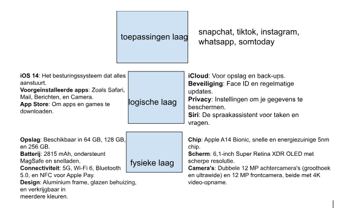

Welkom bij de pagina over de algemene computer architectuur. Op deze pagina zal ik u informatie
geven over de communicatie van de verschillende lagen van het 3 lagen menu.
Hieronder ziet u de tekening van het 3-lagenmodel van mijn iphone 12.

Wat houd het 3 lagen model in?
Het 3 lagenmodel in de informatica verdeelt een systeem in 3 verschillende delen om het makkelijker te maken
De eerste (onderste) laag is de fysieke laag.
Informatie heeft altijd een fysieke drager nodig.
Informatieprocessen hebben altijd fysieke processen als drager nodig.
In de ICT worden deze fysieke elementen gescheiden van de rest, het wordt gescheiden in de fysieke laag.
Hierdoor heb je in de logische en in de toespassingen laag voornameloijk te maken met een aantal begrippen van de fysieke laag.
De logische laag zorgt ervoor dat de hardware en de programma's van elkaar gescheiden blijven.
Daardoor kun je dus de hardware voor verschillende soorten programma's gebruiken.
Door de logische laag kunnen programma's zich blijven ontwikkelen zonder dat de hardware doorvoor hoeft te veranderen.